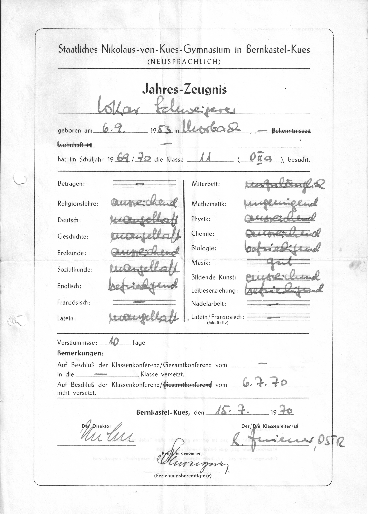

Sommer 1970
Oft habe ich mich gefragt, weshalb ich in der Oberstufe des Gymnasiums ein richtig schlechter Schüler wurde.
Dabei hatte alles ganz anders begonnen. In der Volksschule ging ich gerne zur Schule. Ich war neugierig, stellte Fragen und wollte wissen, wie die Welt funktioniert. Auch in den ersten Jahren des Gymnasiums blieb das so. Lernen fiel mir leicht und machte mir Spaß. Aber irgendwann änderte sich das.
Heute glaube ich, dass es weniger mit dem Unterricht als mit den Menschen zu tun hatte, die ihn erteilten. Lehrer sind mehr als Wissensvermittler. Sie sind Vorbilder, Erzieher und manchmal Wegbegleiter. Einige unserer Lehrer waren das auch. Die meisten aber nicht.
An der Spitze des Gymnasiums stand „Direx“ Nuhn. Für ihn war klar, wie ein guter Schüler auszusehen hatte: angepasst, respektvoll, fleißig und möglichst unauffällig. Menschen wie Manni, Pipa und ich passten nicht in sein Weltbild. Wir diskutierten, widersprachen und hielten wenig von Autoritäten, die ihre Autorität allein aus ihrem Amt ableiteten.
Wahrscheinlich sah Nuhn in uns die Aufsässigen. Es waren die späten 1960er Jahre mit all den Studentenaufständen. Wir repräsentierten wohl für ihn eine Spezies, die darauf aus war, das „Establishment“ zu stürzen. Welche, die man im Auge behalten musste. Und wir sahen in ihm den Vertreter eines Systems, mit dem wir nichts zu tun haben wollten. So begann eine Entfremdung, die sich über Jahre hinzog.
Unser Alltag war dennoch alles andere als traurig. Morgens kam meine Mutter ins Zimmer und weckte meine Schwester und mich mit einem Satz, den ich bis heute nicht vergessen habe:
„Ihr Lieben, es ist halb sieben.“
Nach einem schnellen Butterbrot liefen wir zur Bushaltestelle vor der Kirche. Dort trafen wir die anderen. Im hinteren Teil des Schulbusses wurde Autoquartett gespielt, gelacht und herumgealbert. In Gonzerath stieg Manni zu. Die Fahrt nach Bernkastel war oft unterhaltsamer als alles, was uns später im Unterricht erwartete.
Im Gymnasium angekommen, begegnete man zunächst dem Hausmeister Hundemer. Er hielt wenig von den „lästigen“ Schülern und bezeichnete sie gerne als „Suppenkrauttiroler“. Dann begann der Unterricht. Wir schnippsten Papierkügelchen, reichten Zettel mit Unsinn drauf herum, versuchten bei Klassenarbeiten abzuschreiben und investierten viel Energie darin, den Unterricht kreativ zu überstehen. Das eigentliche Leben spielte sich ja ohnehin woanders ab.
Nach der Schule und vor der Heimreise mit dem Bus gingen wir „schrappen“, ins Eiscafé zum Tartufo-Essen oder trafen uns bei Pipa. Der hatte bereits als Schüler ein kleines Atelier in den Weinbergen seiner Mutter eingerichtet. Dort malte er naive Kunst, lange bevor wir überhaupt wussten, dass man so etwas Kunst nennen konnte. Pipa war ein Freigeist. Manni auch. Und wahrscheinlich war ich es ebenfalls.
Rückblickend glaube ich, dass wir uns von der Schule innerlich längst verabschiedet hatten, lange bevor die Schule sich von uns verabschiedete.
Der Höhepunkt kam am 15. Juli 1970. Das Zeugnis lag vor mir: vier Fünfen und eine Sechs. Deutsch, Geschichte, Sozialkunde, Latein und Mathematik. Dazu eine nicht vorhandene Mitarbeit. Die Versetzung von der Obersekunda in die Unterprima war ausgeschlossen.

Mein Jahreszeugnis von 1970. Vier Fünfen, eine Sechs und das offizielle Ende meiner ersten Oberstufenkarriere.
Über die Versetzungskonferenz weiß ich nichts mehr. Vermutlich war die Sache schnell erledigt. Diskussionsbedarf bestand ohnehin nicht. Für die Lehrerschaft war ich ein hoffnungsloser Fall. Manni und Pipa offenbar ebenfalls. Die Nachricht traf uns deshalb nicht völlig unvorbereitet. Im Gegenteil. Uns war das länsgt klar.
Heute klingt das merkwürdig, aber damals empfanden wir das Sitzenbleiben nicht als große persönliche Katastrophe. Klar, es war etwas unerfreulich. Wer bleibt schon gerne sitzen? Gleichzeitig hatte die Sache für uns etwas von einem gelungenen Protest. Wir hatten uns jahrelang mit dieser Lehrerschaft angelegt, nun lag das Ergebnis auf dem Tisch. Rückschauend war das natürlich Unsinn. Aber mit siebzehn Jahren sieht man die Welt manchmal anders.
Auch zuhause blieb der große Knall aus. Meine Eltern hatten die Entwicklung kommen sehen. Wahrscheinlich hatte ich sie lange genug auf den „blauen Brief“ vorbereitet. Sie waren Menschen aus einfachen Verhältnissen. Ehemalige Eifeler, die wussten, dass Rückschläge zum Leben gehören. Nicht schön, aber überwindbar. Es gab keine dramatischen Szenen, kein Donnerwetter, kein Familiengericht. Es war halt so. Der Kölner hätte gesagt: „Et es wie et es, un et kütt wie et kütt.“ Ich würde die Klasse eben wiederholen.
Für Manni und mich war das ebenfalls kein großes Thema. Wir blieben ja zusammen sitzen. Dadurch fühlte sich das Ganze weniger wie ein Absturz an. Eher wie eine Verlängerung des laufenden Programms. Die neue Klasse war deshalb auch kein wirklicher Neuanfang. Wir befanden uns weiterhin in unserer Komfortzone. Die Leistungen wurden etwas besser. Die Motivation ebenfalls. Aber die Lehrer waren dieselben geblieben. Und damit auch die Fronten.
An einen Satz erinnere ich mich allerdings bis heute. Er stammt von unserem Deutschlehrer Müller. Eines Tages erklärte er vor der gesamten Klasse mit einer von manchen Lehrern kultivierten Mischung aus Überlegenheit und pädagogischer Gewissheit:
„Herr Schweigerer, Sie sind nicht oberstufenreif.“
Damals siezte man die Schüler bereits. Und ich weiß noch genau, was ich damals dachte: Wenn du wüsstest, was für eine armseliges Würstchen du eigentlich bist. Du kannst diesen Satz nur deshalb zu mir sagen, weil du mein Lehrer bist.
Für Müller war die Sache damit vermutlich erledigt. Für mich nicht.
Heute, viele Jahrzehnte später, glaube ich sogar, dass solche Sätze manchmal länger leben als die Menschen, die sie ausgesprochen haben. Damals war ich siebzehn Jahre alt. Und Sitzenbleiber.
Wie die Geschichte weiterging, wusste zu diesem Zeitpunkt allerdings weder Müller noch Direktor Nuhn.
Ich übrigens auch nicht.